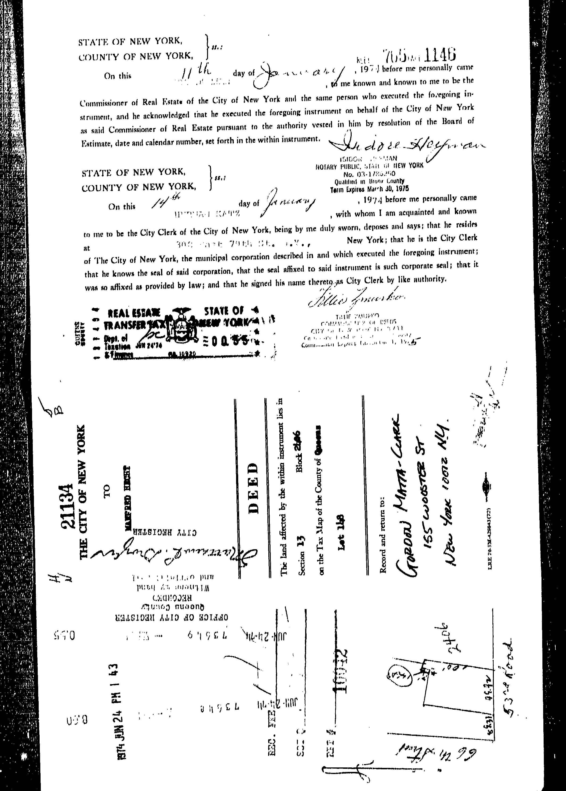

In 1973 and 1974 the artist Gordon Matta-Clark bought 15 small parcels of NYC land at auction for $25 - $75 per lot. While looking with Alana Heiss (founder of PS1) for sites for alternative art projects, he found the city was auctioning off tax lots that were small slivers of land left over from rezoning processes over the years. Some are too narrow or tiny to build on while others are surrounded by residential lots and inaccessible to the street.
The story of these lots and their stewardship by Matta-Clark shows the city taking a few different approaches to handling these leftover bits of land in a high stakes real estate market where any bit of public or private space is so precious. Brought to auction by the city, it seems this was a brief experiment with returning them to private hands; perhaps to raise money through sales and property taxes. All the lots in the Fake Estates Project were bought from the City. Some of those were foreclosed upon and seized by the city due to unpaid taxes. For some, records could not be found online.

Even at $25-$75 per lot, fter his first purchase of a few lots at auction Matta-Clark did not have enough money for the second round of lots. He had friend Manfred Hecht purchase for him who then transferred or the deeds to Gordon Matta-Clark's name. Matta-Clark went to sites to photograph them, having to trespass to access many of tn one case he photographed the wrong site (Block 209, lot 160). In the case of Block 672, Lot 106 records show this lot was joined with Lot #6 on this block. An existing building was built there in 1934 and from aerial photos appears to cover the whole of Lot 6. However, original tax lots show the triangular space sandwiched between 3 industrial buildings. On a visit to the site in the 1990's Matta-Clark's wife Jane Crawford was not allowed access to the lot by the adjacent building owners.
Matta-Clark did not have income to pay property taxes which amounted to about $25 per year. He gave materials to friend Normal Fisher who paid taxes until his death in 1977. Then materials were returned to Matta-Clark who then died in 1978. The Fake Estates project was not discovered until years later when the box of papers, photographs and records associated with the lots was returned to Jane Crawford in 1979 or 1980. She received notices from New York City Department of Finance about unpaid taxes in 1978, and not knowing what they were about, nor understanding the disorganized box of materials, she left them unpaid. In 1979 the properties were reclaimed by the city through foreclosure for unpaid taxes.
The records for 12 of the 15 lots shows they were returned to the city through foreclosure along with a list of thousands of lots and parcels that were seized for unpaid taxes.
Lot 3 copy
Lot 3 image
Lot 4 copy
Lot 4 image
Lot 5 facts and story. Tax map from 1965:
Lot 5 copy
Lot 5 image
Lot 6 text
Lot 5 image
I learned most details about this story from the following books and one website:
Cabinet Magazine's
"Gordon Matta-Clark", edited by Corrine Diserens. ©2003.
Other data was found in NYC Pluto data sets, and through the NYC Oasis interactive land use map. And from NYC Department of Finance transaction records and tax lot maps.